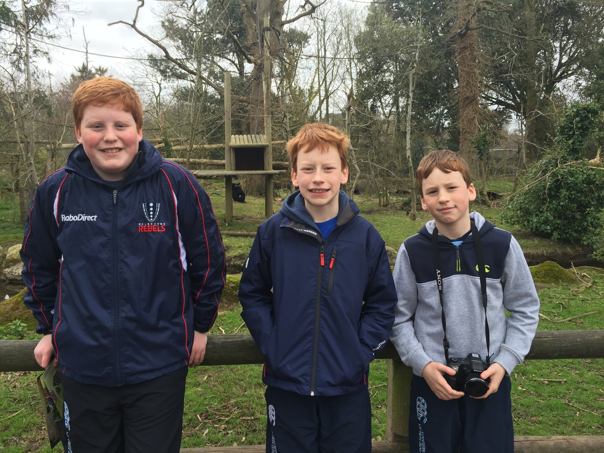

Our Senior group, focuses on much more challenging and advanced code. We focus on using programs that many people already in the industry use daily. These programs generally use a much more complex form of coding language than what the Junior group is used to
We also have instructors teach the basics of computer hardware to give the Senior group members a better understanding of what they are doing. As an exercise, we get the senior members to sometimes teach the Junior members in order to strengthen the bond between the two groups
In seniors, we use programs such as :
Python is a very advanced programming language and supports a system called a multi programming paradigm, which means it allows for multiple styles of computer programming as a way of building a computer program itself
Our instructors are very skilled when it comes to Python and will be able to teach the in's and out's to the Senior group , if you would like to know more or try for yourself, click here
Unity is a free game engine used to develop video games across multiple platforms whether it be phone, console or computer. This is a fun to use program which will allow to older group to see what it takes to be a game. It also teaches the basics of C++, another coding program that is quite advanced.
if you would like to know more or try for yourself, click here
As the Senior group works a lot more extensively, we have an extra slots for a class and longer classes in general. We meet up on afternoon Wednesday at 5:00pm - 6:30pm, Saturday from 1:00pm - 3:00pm and Sunday from 4:00pm - 5:30pm. Seniors also do not have any session over holidays or during bank holiday weekends. However, we do take attendance of senior members as we only have a limited amount of spaces, therefore people with poor attendance will be asked to leave to create space for new members.
If you have a child younger than 12, Click here
Last June, CoderDojo held an event at the RDS stadium where young coders from all over the country and many other countries gathered in order to show of there creations using the code they learn in CoderDojo. All CoderDojo members are encouraged to take apart of this event, whether in a group project or a solo project.
Last year, 4 members from our CoderDojo came 2nd place for overall performance for their work on a website where people submit movie reviews
Well done again to Micheal O'Leary, Jack O'Donavan and David Smith!
